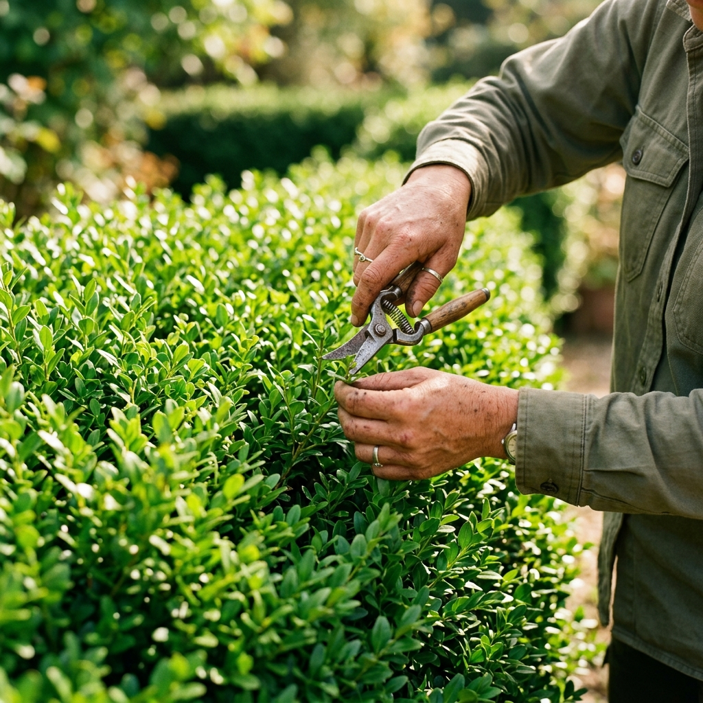

Llevamos nuestra misión a cada espacio que necesita volver a respirar
Desde pequeños jardines hasta grandes parques metropolitanos, impulsamos la vitalidad de espacios verdes en múltiples escalas y contextos.

Municipios y parques públicos
Cuidamos áreas verdes que conectan comunidades, elevando su calidad ecológica y su valor social.
Parques y jardines privados
Transformamos entornos privados en espacios vivos, eficientes y sostenibles.
Áreas verdes corporativas
Diseñamos y mantenemos ecosistemas que mejoran la experiencia de trabajadores y visitantes.
Espacios deportivos
Optimizamos superficies verdes para un rendimiento seguro, resistente y de alta calidad.